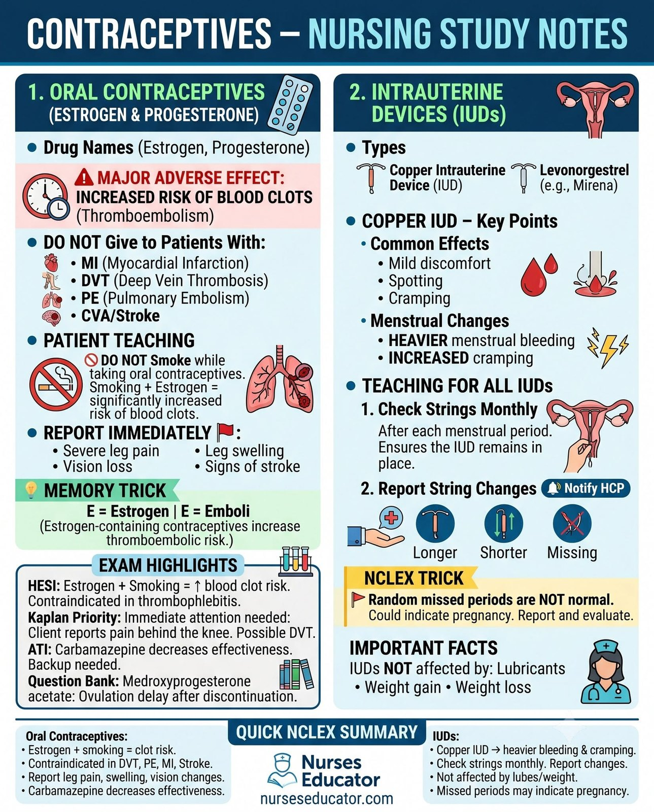
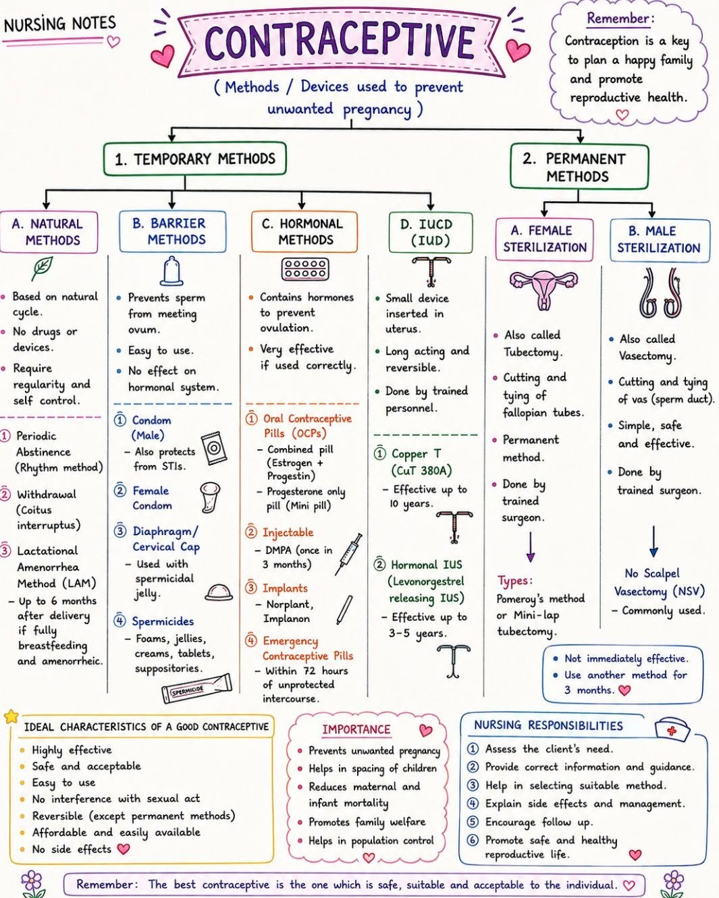

Most contraception questions are really contraindication questions. Learn who cannot have oestrogen and the rest follows.
Oestrogen increases clotting. Every contraindication below is either a clot risk or a hormone-sensitive cancer.
Abdominal pain · Chest pain · Headache (severe) · Eye problems · Severe leg pain
Every one of those is a possible clot. This mnemonic is worth more marks than the method list.
| Method | Typical use | Key teaching |
|---|---|---|
| Implant / IUD | >99% | Most effective; nothing to remember. Copper IUD also works as emergency contraception |
| Sterilisation | >99% | Consider permanent; counsel accordingly |
| Injection (Depo) | ~96% | Every 12 weeks; bone density loss — calcium, vitamin D, weight-bearing exercise |
| Combined pill / patch / ring | ~93% | Same time daily; oestrogen rules above |
| Condom | ~87% | The ONLY method that prevents STIs |
| Diaphragm | ~83% | Refit after childbirth or big weight change; leave in 6 h after |
| Withdrawal / fertility awareness | ~77–80% | Least reliable |
An IUD or implant is more effective than sterilisation on paper — but only condoms protect against infection. A woman with an IUD and a new partner still needs condoms. That is dual protection.
A 28-day cycle in two halves, with ovulation in the middle.
| Follicular (days 1–14) | Luteal (days 15–28) | |
|---|---|---|
| Hormone | FSH, then oestrogen | LH, then progesterone |
| Ovary | Follicle matures | Corpus luteum forms |
| Uterus | Lining rebuilds | Lining becomes secretory, ready to implant |
Ovulation is triggered by the LH surge, about day 14. Menstruation begins about 14 days AFTER ovulation - that half is fixed, and cycle length varies in the first half.
The temperature rise confirms ovulation after it has happened, so it is poor for avoiding pregnancy but useful for achieving it.


Saved study graphics from your own collection. Each one is someone else’s work — check anything clinical against your course materials before you rely on it.